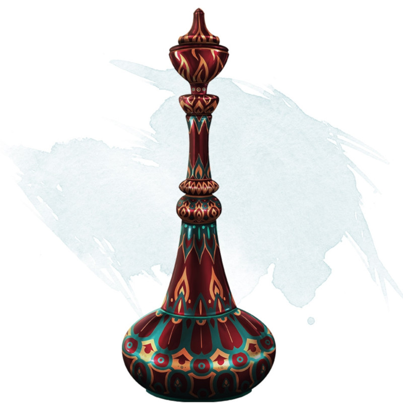

Efreeti Bottle
Wondrous item, very rare
This painted brass bottle weighs 1 pound. When you use an action to remove the stopper, a cloud of thick smoke flows out of the bottle. At the end of your turn, the smoke disappears with a flash of harmless fire, and an efreeti appears in an unoccupied space within 30 feet of you.
The first time the bottle is opened, the DM rolls to determine what happens.
The first time the bottle is opened, the DM rolls to determine what happens.
| d100 | Effect |
|---|---|
| 01-10 | The efreeti attacks you. After fighting for 5 rounds, the efreeti disappears, and the bottle loses its magic. |
| 11-90 | The efreeti serves you for 1 hour, doing as you command. Then the efreeti returns to the bottle, and a new stopper contains it. The stopper can't be removed for 24 hours. The next two times the bottle is opened, the same effect occurs. If the bottle is opened a fourth time, the efreeti escapes and disappears, and the bottle loses its magic. |
| 91-00 | The efreeti can cast the wish spell three times for you. It disappears when it grants the final wish or after 1 hour, and the bottle loses its magic. |
Dungeon Master´s Guide (SRD)
